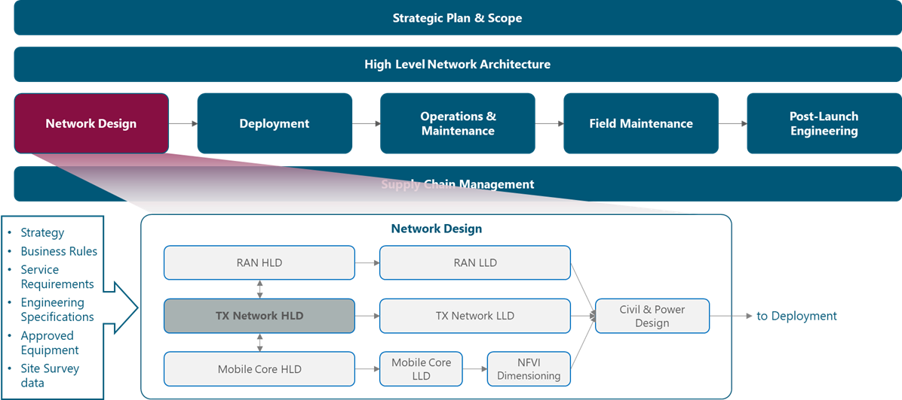

1 Introduction
The Tx Network High-level Design (HLD) module provides NaaS operator background information and methodologies to elaborate an HLD Design for Tx Network. It provides guidelines on how to design the transport network that interconnects different networks including RAN (Radio Access Network) and data centers. It further provides instruction on how to transform guidelines into actual design parameters which is necessary for the development of the Tx Network HLD.
The main output of the module is the Tx Network HLD Design which includes, among others, the Transport Design that specifies the physical and logical topology, the transport solution to be implemented and a high-level Bill of Quantities (BoQ). With this information, the business case can be analyzed. This module will guide the NaaS Operator through the process of generating a technically compliant HLD to speed decision making and the related deployment process.
1.1 Module Objectives
This module will enable a NaaS Operator to stand-up, run and manage a Tx Network HLD initiative. The specific objectives of this module are to:
- Provide an information base and fundamentals to perform the tasks associated with Tx Network HLD.
- Provide detailed how-to instruction on the key HLD engineering tasks.
- Provide an overview of the end-to-end Tx Network HLD process with instructions for tailoring to specific NaaS environments.
- Provide guidelines to develop a formal Tx Network HLD recommendation.
1.2 Module Framework
The Module Framework in Figure 1 describes the structure, interactions and dependencies among different NaaS operator areas.
Strategic Plan & Scope and High Level Network Architecture drive the strategic decisions to forthcoming phases. Network Design is the first step into implementation strategy which is supported by Supply Chain Management.
The Tx Network HLD module is included within the Network Design Area and has direct relation with RAN HLD and Mobile Core HLD. The generated output of this module will serve as a required input for the Tx Network LLD module.

Figure 1. Module Framework
Figure 2 presents the Tx Network HLD functional view where the main functional components are exhibited. Critical module inputs are further described and examined in Section 2.2. In addition, guidance and methodologies to execute the tasks included within each function are described in Section 3.

Figure 2. Module Functional View
The rest of this module is structured as follows: Section 2 is a birds-eye view of the Tx network fundamentals involved in its design. Once fundamental knowledge is acquired, Section 3 focuses on showing a hands-on view of the tasks involved in the design. Section 4 organizes functional tasks on an end-to-end process flow that can be used as-is or be adapted by NaaS operators to match with their particular conditions. Finally, Section 5 illustrates how to integrate previous elements into a comprehensive High-level Design (HLD) recommendation.
Review of fundamental transport technologies can be found in the Learning Repository and is a useful prerequisite to this module.
2 HLD Fundamentals
General overview of the baseline concepts to develop a Tx Network Design.
2.1 Tx Network Environment
In a mobile environment, the Transport Network interconnects different networks including the RAN (Radio Access Network), data centers and external networks. Figure 3 displays the architecture of a typical transport network.

Figure 3. Typical Transport Network
Mobile networks are ubiquitous and support a mix of different types of traffic originating from and terminating to mobile devices. All of this traffic must be conveyed between the mobile cellular base stations and the transport network. For this reason, different aggregation levels exist on the transport network which for most of NaaS Operators can be classified as: last-mile and aggregation level.
The implementation of 4G Long-Term Evolution (LTE) imposes some requirements on transport networks such as more network capacity and latency reduction. These requirements are better served through terrestrial technologies (fiber optic and microwave). However, in rural areas, this becomes a challenge because satellite transport is usually the only feasible technology. For this reason, transport network infrastructure is an essential component of the NaaS operator network and its design must be performed with optimal processes and techniques.
2.1.1 Requirements for Transport Network
Capacity: Compared to 2G and 3G, LTE base stations support a considerable amount of traffic. In addition to user traffic, control, management and synchronization traffic must be considered. Detailed explanation regarding traffic models is provided in Section 3.4.
Latency: In addition to capacity increase, latency reduction is one of the key goals of the LTE deployments. The delay requirements for the transport depend on the end-to-end delay of end customer applications and on the delay budget which is given to the transport. Latency requirements can be an important limitation for some transport technologies such as satellite and can directly affect its feasibility.
Availability: The availability requirements of the transport network are derived from the availability requirements of the end-user service. A typical requirement for the transport network in a rural environment could be an availability value of 99.95%. In most cases the availability is dominated by the last-mile link.
2.2 Network Design Inputs Description
This section analyzes the module input data and their respective candidate sources, which is presented in Table 1. Furthermore, the impact of module inputs on the design process is examined.
Table 1. Module inputs analysis.
2.3 Transport Solution Feasibility Analysis
This section describes the feasibility considerations for different transport technologies to be used on the transport network. When it comes to transport solutions, mobile operators have several technical solutions at their disposal. Mobile operators prefer fiber optic where available, especially in city centers, but microwave is the mainstay solution for last-mile traffic. Satellite transport is mainly deployed where existing transport infrastructure is not available.
2.3.1 Fiber Optic Technology
Fiber Optic is the mainstay wired transport in mobile operator networks when is available because of the significant inherent bandwidth carrying capability. Additionally, several additional techniques can be used to offset any bandwidth constraints and essentially render the fiber assets future-proof.
While fiber optic has tremendous operational capacity, its main limitation is the cost and logistics of deployment. Moreover, it can take several months to provision each cell site with fiber-optic transport.
The fundamental aspects of fiber optic technology design are discussed in the Primer on Fiber Optic Technologies Principles document.
2.3.2 Microwave Technology
Most operators heavily rely on microwave transport solutions in the 5 GHz to 80 GHz bands (in rural environments frequencies above 15GHz are not generally feasible). Microwave is a low-cost option for mobile transport, as it can be deployed in a matter of days and support a range of up to several tens of kilometers.
The main limitation of microwave links is the requirement of Line of Sight existence between transmitter and receiver. This represents a drawback for its implementation, especially in rural areas due to steep conditions in the terrain. In addition, in many cases microwave requires a license to be obtained. Finally, in high frequencies, microwave links are subject to atmospheric effects or rain fade, which can attenuate the signal and limit its range.
The fundamental aspects of microwave technology design are discussed in the Primer on Microwave Technologies Principles.
2.3.3 Satellite Technology
Satellite technology is deployed in fringe areas of the network, usually in rural scenarios in emerging markets. Furthermore, satellite technology may be deployed as a temporary measure as the operator waits for regulatory microwave licenses to be approved. Satellite coverage is determined by satellite footprint, more details are provided in Section 3.
In Table 2, a comparison among different types of satellite orbits is presented.
|
Orbit |
GEO |
MEO |
LEO |
|
Distance |
35,800 km |
2,000km-35,000km |
160km-2,000km |
|
Latency |
250-500 ms |
60-250 ms |
30-50 ms |
|
Throughput |
Up to 500 Mbps |
Up to 800 Mbps |
1Gbps+ *(See NOTE) |
|
No HO |
2-3 hours |
15-20 min |
Table 2. Satellite Orbit Comparison
*NOTE: As LEO systems have not been launched commercially, the 1Gbps value must be used as a theoretical reference.
The cost of satellite terminal equipment located at the base station is in line with microwave equipment. However, the OpEx burden generated by the satellite service fee can impact on the business case.
The fundamental aspects of satellite technology design are discussed in the Primer on Satellite Technologies Principles document.
2.4 Physical Topology Design
As stated in Section 2.1, a typical transport network consists of two domains: Last-mile and Aggregation. Additionally, in the majority of the cases it may exist a connection provided by a 3rd party network to connect to core elements. The domain borders are mostly defined by the technology and topology used within the domain. The domain characteristics in terms of physical topology are:
Figure 4 displays the structure of the transport network:
Figure 4. Basic structure of a mobile transport network
The structure displayed on Figure 4 considers different physical technologies and topologies. Moving left to right, the last-mile connects a demarcation device, usually deployed at the cell site, to a first stage of traffic grooming and concentration. The aggregation network, in turn, further aggregates traffic, adapts any technology change and provides the hand-over point to a higher level of aggregation network.
The term physical connectivity is used to represent any technology that can be used to connect nodes, details on Section 3. In addition, on top of the physical layer a networking layer is implemented which embraces all of the possible logical architectures needed to steer LTE traffic and applications. Details on the Network Topology Design are covered in LLD Module.
2.5 Capacity Planning Process
In simple terms, the transport network should be dimensioned to provide reliable service to the users. Users should be able to connect to the network and use the services for which they have subscribed anytime inside the coverage area, whereas service outages or connectivity problems should be rare. In order to achieve this, a capacity planning analysis must be performed to determine the traffic that the transport network must support.
2.6 Transport Solution Definition
The assessment of Transport Solution to implement a transport network or link is dependent on the feasible transport solutions, capacity requirements as well as additional implications which are analyzed:
Feasible Transport Solutions: Feasibility Analysis is a key element in order to define the transport solution to be deployed as in rural areas not all the solutions are feasible. Thus, feasibility might be the most important constraint to select the transport technology.
Capacity Requirements: In wireless-based solutions (MW and Satellite), it is essential to validate that sufficient capacity exists to satisfy traffic requirements. The Capacity Planning provides the required traffic to be supported by transport technologies.
Deployment Cost: Deployment cost can be a key criterion when the network operator is faced with deploying several cell sites in a year.
Time to deploy and licensing: Network operators are often under pressure to get a cell site operational as quickly as possible. Having to wait several months for a fiber-optic connection to be provisioned to the cell site can prevent selection of fiber solution in the short term.
Table 3 presents a high-level comparison of different technology parameters to be implemented on the transport network.
|
Parameter |
Fiber Optic |
Microwave |
Satellite |
|
Future-proof Available Bandwidth |
High |
Medium |
Low |
|
Deployment Cost |
High |
Low |
Medium |
|
Interference Immunity |
Very-high |
Medium |
Medium |
|
Range (km) |
<80 |
<30* (5-15GHz) |
Subject to satellite footprint |
|
Time to Deploy |
Months |
Weeks |
Weeks |
|
Licensed Required |
No |
Both (Licensed/Unlicensed) |
No |
Table 3. Transport Technologies High-level Comparison
*Note: Typical value, however, microwave links can be engineered to reach larger distances.